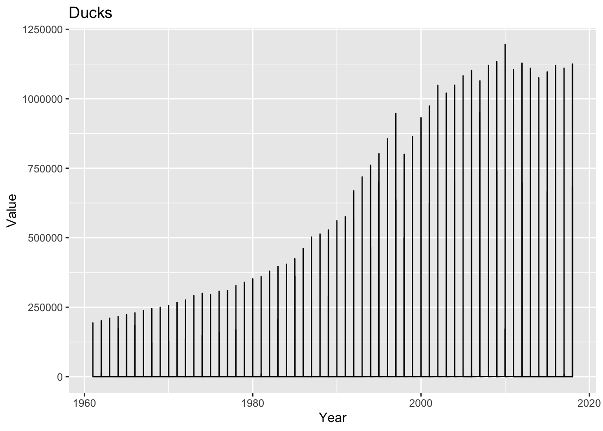

Code
library(tidyverse)
library(dplyr)
library(ggplot2)
library(readxl)
knitr::opts_chunk$set(echo = TRUE, warning=FALSE, message=FALSE)library(tidyverse)
library(dplyr)
library(ggplot2)
library(readxl)
knitr::opts_chunk$set(echo = TRUE, warning=FALSE, message=FALSE)Today’s challenge is to
Read Birds.csv and get summary for each item
df_birds <- read_csv("_data/birds.csv")
df_birds_select <- df_birds %>%
select('Area', 'Item', 'Year', 'Unit', 'Value', 'Flag', 'Flag Description')
df_birds_select %>%
filter(Value != "") %>%
group_by(Year, Item) %>%
summarize(mean = mean(Value),
median = median(Value))# A tibble: 290 × 4
# Groups: Year [58]
Year Item mean median
<dbl> <chr> <dbl> <dbl>
1 1961 Chickens 74060. 4184
2 1961 Ducks 7232. 380
3 1961 Geese and guinea fowls 2364. 336.
4 1961 Pigeons, other birds 3307. 2270
5 1961 Turkeys 10610. 312
6 1962 Chickens 76753. 4300
7 1962 Ducks 7520. 345
8 1962 Geese and guinea fowls 2435. 311
9 1962 Pigeons, other birds 3771. 3000
10 1962 Turkeys 9043 329
# … with 280 more rowsdata <- na.omit(df_birds_select)
# Create a plot for each item
items <- unique(data$Item)
for (item in items) {
item_data <- subset(data, Item == item)
p <- ggplot(item_data, aes(x = Year, y = Value, group = 1)) +
geom_line() +
labs(title = item)
print(p)
}



Using a combination of words and results of R commands, can you provide a high level description of the data? Describe as efficiently as possible where/how the data was (likely) gathered, indicate the cases and variables (both the interpretation and any details you deem useful to the reader to fully understand your chosen data).
Summary of the entire dataframe
summary(df_birds_select) Area Item Year Unit
Length:30977 Length:30977 Min. :1961 Length:30977
Class :character Class :character 1st Qu.:1976 Class :character
Mode :character Mode :character Median :1992 Mode :character
Mean :1991
3rd Qu.:2005
Max. :2018
Value Flag Flag Description
Min. : 0 Length:30977 Length:30977
1st Qu.: 171 Class :character Class :character
Median : 1800 Mode :character Mode :character
Mean : 99411
3rd Qu.: 15404
Max. :23707134
NA's :1036 df_birds_select %>%
group_by(Item, Year) %>%
summarise(mean = mean(Value, na.rm = TRUE),
median = median(Value, na.rm = TRUE))# A tibble: 290 × 4
# Groups: Item [5]
Item Year mean median
<chr> <dbl> <dbl> <dbl>
1 Chickens 1961 74060. 4184
2 Chickens 1962 76753. 4300
3 Chickens 1963 78922. 4500
4 Chickens 1964 80213. 4600
5 Chickens 1965 82458. 4930
6 Chickens 1966 83880. 5208.
7 Chickens 1967 88047. 5056
8 Chickens 1968 91003. 5250
9 Chickens 1969 94121. 6000
10 Chickens 1970 98297. 6070.
# … with 280 more rowsConduct some exploratory data analysis, using dplyr commands such as group_by(), select(), filter(), and summarise(). Find the central tendency (mean, median, mode) and dispersion (standard deviation, mix/max/quantile) for different subgroups within the data set.
Summary table for world statistics.
# Filtering the world data
data_filtered <- filter(df_birds_select, Area == "World")
# Group the data by item
grouped_data <- data_filtered %>%
group_by(Item)
# Compute mean, median, and mode for each item
summary_stats <- grouped_data %>%
select(Item, Value) %>% # select only the relevant columns
summarise(mean = mean(Value, na.rm = TRUE), # compute mean and exclude NAs
median = median(Value, na.rm = TRUE), # compute median and exclude NAs
mode = as.numeric(names(table(Value))[which.max(table(Value))])) # compute mode using table() function
# Compute standard deviation and quantiles for each item
dispersion_stats <- grouped_data %>%
select(Item, Value) %>% # select only the relevant columns
summarise(sd = sd(Value, na.rm = TRUE), # compute standard deviation and exclude NAs
min = min(Value, na.rm = TRUE), # compute minimum and exclude NAs
q1 = quantile(Value, probs = 0.25, na.rm = TRUE), # compute 1st quartile and exclude NAs
median = median(Value, na.rm = TRUE), # compute median and exclude NAs
q3 = quantile(Value, probs = 0.75, na.rm = TRUE), # compute 3rd quartile and exclude NAs
max = max(Value, na.rm = TRUE)) # compute maximum and exclude NAs
# Combine the summary statistics and dispersion statistics into a single table
summary_table <- inner_join(summary_stats, dispersion_stats, by = "Item")
# View the summary table
summary_table# A tibble: 5 × 10
Item mean media…¹ mode sd min q1 media…² q3 max
<chr> <dbl> <dbl> <dbl> <dbl> <dbl> <dbl> <dbl> <dbl> <dbl>
1 Chickens 1.16e7 1.04e7 3.91e6 6.13e6 3.91e6 5.94e6 1.04e7 1.66e7 2.37e7
2 Ducks 6.46e5 5.44e5 1.93e5 3.58e5 1.93e5 3.02e5 5.44e5 1.05e6 1.20e6
3 Geese and gu… 1.77e5 1.25e5 3.66e4 1.24e5 3.66e4 6.29e4 1.25e5 3.02e5 3.91e5
4 Pigeons, oth… 2.94e4 3.22e4 1.21e4 1.15e4 1.21e4 1.91e4 3.22e4 3.29e4 5.79e4
5 Turkeys 3.53e5 4.22e5 1.54e5 1.16e5 1.54e5 2.29e5 4.22e5 4.50e5 4.74e5
# … with abbreviated variable names ¹median.x, ²median.yI have picked the highest and least consumed item of the world data.
Based on the data, the mean number of chickens produced is approximately 11.6 million with a standard deviation of approximately 6.1 million. The median number of chickens produced is approximately 10.4 million. The mode is 3.9 million. The minimum number of chickens produced is zero, while the maximum number is approximately 23.7 million. the average (mean) number of chickens increased from around 2 million in 1961 to over 23 million in 2018 in the world. However, there is also a large variability in the number of chickens, as indicated by the high standard deviation of over 6 million.
For pigeons, the mean number produced is approximately 29,400 with a standard deviation of approximately 11,510. The median is approximately 32,222 and the mode is 12,068. The minimum number produced is 12,068, while the maximum is approximately 57,909.Based on the data, the mean and median values for pigeons have remained relatively stable over the years. However, the mode value for pigeons has fluctuated significantly, which indicates that there have been some years where the production of pigeons was significantly higher than others. Overall, there is not a clear upward or downward trend in pigeon production based on the provided data.